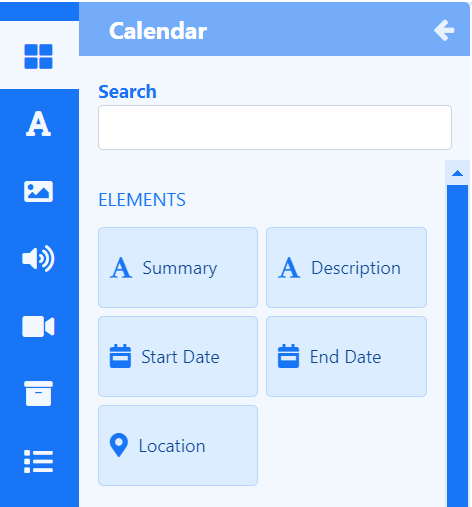
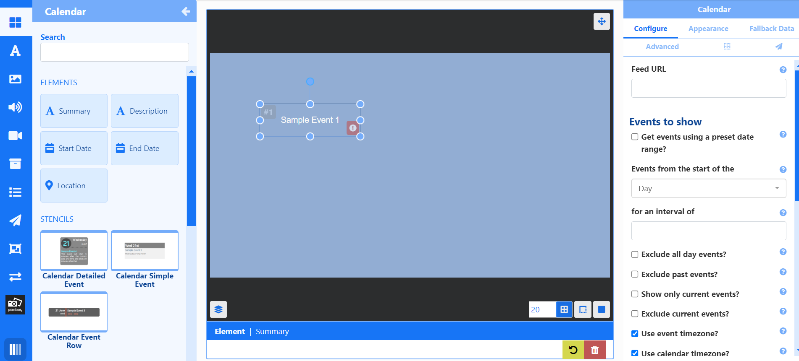
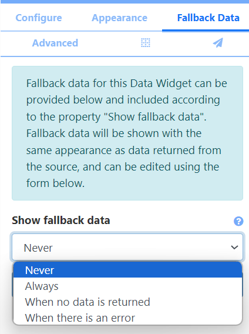
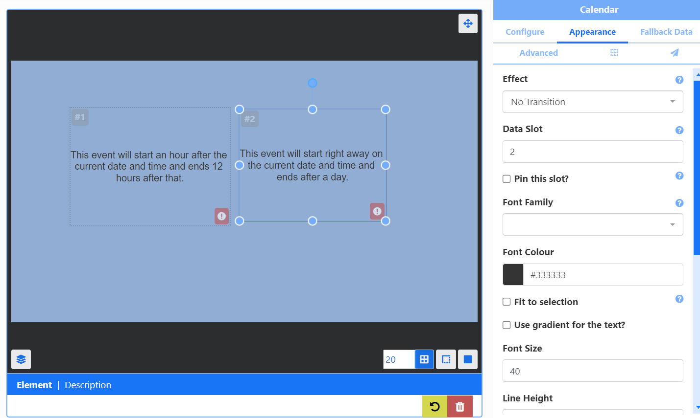
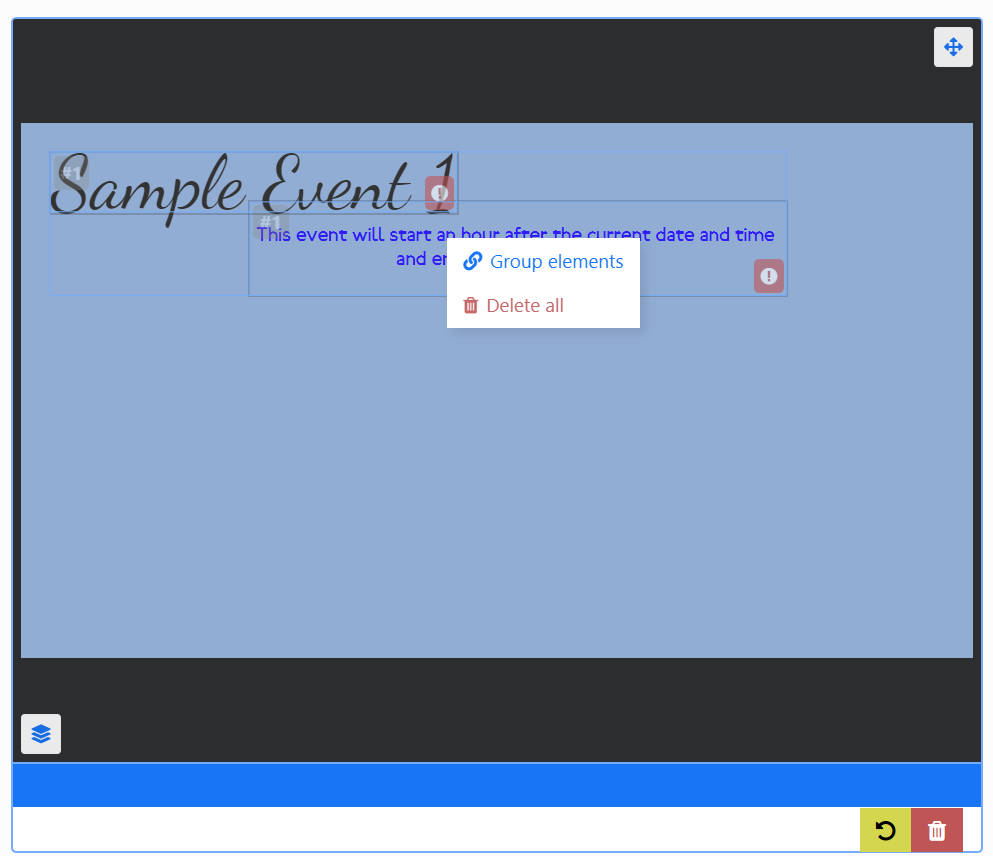
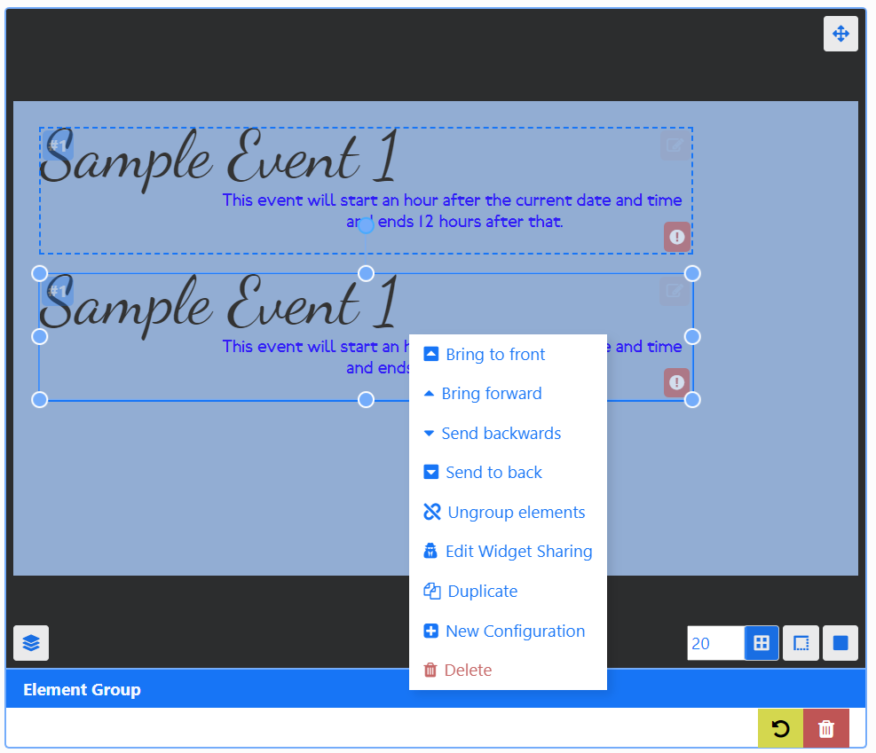
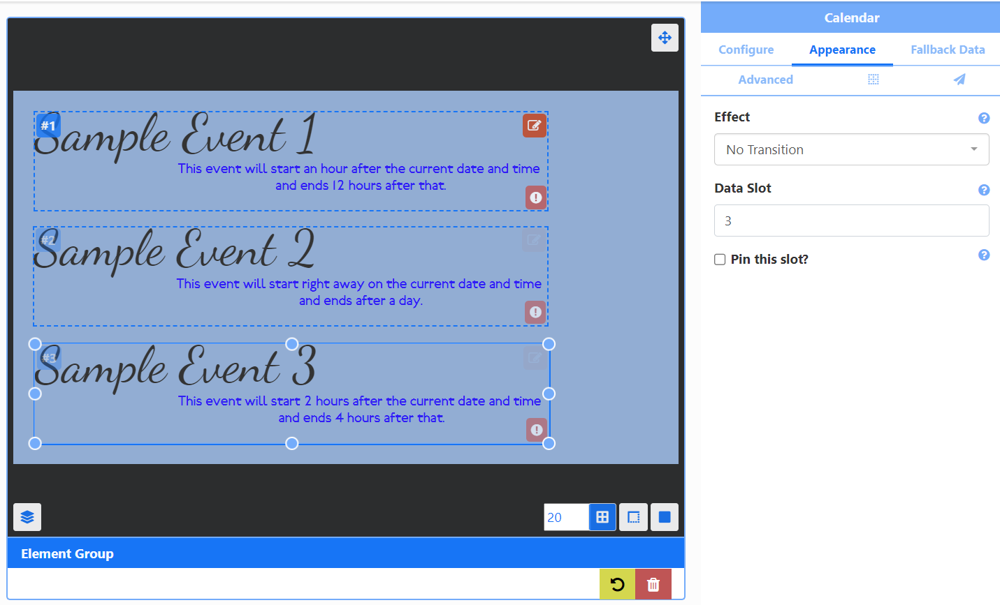

Data Widgets
Data Widgets rely on an external data source to show information on Layouts by using Elements.
Feature Overview
- Data source driven content.
- Separate Elements allow for flexibility.
- Provide fallback data to show.
- Control paging of data with Data Slots.
- Create Groups for easy duplication.
- Pull data from an alternative source on the same Layout.
- Utilise pre-made designs.
Each Data Widget has a set of Elements which are fed by a data source which allow a User flexibility in the placement of returned data rather than being bound by a rigid Static Template design:
- Click on a Data Widget to show all available Elements.

Configure
Each Element has a set of configurable options available from the Properties Panel once added:

An exclamation icon will be shown to prompt a User as to what needs to be actioned. The above example has yet to have a URL entered for an ICS feed!
Options set from the Configure tab will apply to all Elements added to the Layout of the same Widget type.
Create a New Configuration to select data from alternative data sources associated with the Widget!
Appearance
The Appearance tab includes options to configure how the data returned from the Element should look and includes transition effects and Data Slot configuration.
Fallback Data
Create Fallback Data for selected Data Widgets and specify under what conditions it should be shown:

- Click Add New.
- Complete the form fields with the required information.
- Save.
Fallback Data options will vary dependent on the Data Widget selected!
Advanced
The Advanced tab is used to set Naming, provide specific durations, set the collection level of proof of play stats and enable items to be repeated to fill all Data Slots.
Positioning
Use the Positioning tab (grid icon) to set precise positioning and Layering.
Elements have their own Canvas Layer, which can be used to determine where they appear in relation to other natively rendered Elements such as Playlists and Videos!
Data Slots
When adding more than one of the same Element, handle the paging of returned data by specifying a Data Slot to use for each Element:

For example, the image above shows 2 Description Elements from the Calendar Widget have been added. One has a Data Slot of 1 the other a Data Slot of 2. If 10 (Calendar Events) items were returned, Data Slot 1 would show items 1,3,5,7,9 with Data Slot 2 showing items 2,4,6,8,10.
Data Slots are set from the Appearance tab of the Properties Panel for the selected Element.
Adding more than one of the same Element will automatically increase in Data Slot number!
In addition Elements have the option to Pin this slot so that the first data item to appear in that slot will remain for the entire duration of the Widget and won’t cycle through data items.
Users can set whether to Repeat items in order to fill all data slots to ensure there are no empty slots by using the checkbox on the Advanced tab of the Properties Panel!
Grouping Elements
Group Elements of the same Data Widget together to make it easier to build designs:
- Add Elements to the Layout, position and style using the Appearance tab.
- Hold down the shift key and click into each Element you wish to group.
- Once selected, release the shift key and right click.
- Select Group elements.

Groups can also include Global Elements.
Groups can be easily duplicated:
- Right click and select Duplicate.

Edit Data Slots for each group to control data paging:

Make edits to the Appearance of each Element in a group:
-
Click the pencil icon in the top right corner.
-
Click in each Element and use the Appearance tab to make changes.
-
Click out of the group or click the X to exit editing.
Edits can be made to the Configuration but it will apply to all Elements added.
Ungroup elements from the right click menu!
New Configurations
New Configurations can be created in order to have alternative configuration options/different data source associated with the Widget:
- Right click an Element or Element Group and select New Configuration from the menu.
- Select an alternative data source / alternative configuration from the Configure tab.
Stencils
Selected Data Widgets include pre made designs of Element Groups called Stencils to assist Users with creating content simply and quickly:
- Stencils are added in exactly the same way, positioned and resized.
- Complete the fields to Configure.
- Edit the Appearance by clicking on the pencil icon in the top right of the group.
- Select an Element in the group to make edits.
Right click to ungroup to customise further!
Static Templates
Static Templates are included for specific Widgets. Templates can be configured to affect the behaviour of returned results as well as alter styling options.